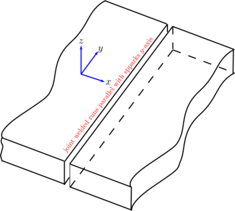
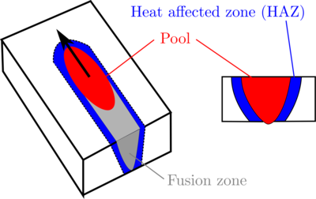
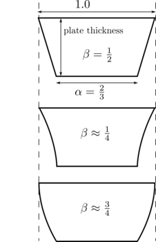

Syntax:
app_style style nspins yp alpha beta velocity haz
Examples:
app_style potts/weld 10000 0 0.5 0.75 7.0 50.0 weld_shape_ellipse 100.0 150.0
This defines a potts/weld model with 10000 spins. An elliptical pool shape is specified with width and length of 100 and 150 sites respectively; note these are pool dimensions at the top surface of the weld. The value alpha=0.5 scales the elliptical pool width and length at the top surface to 50 and 75 sites respectively at the bottom (root) surface of the weld. The Bezier control point parameter specifies an outwardly curved pool; the weld speed is 7 MCS and the heat effect zone is 50 sites wide.
This application also requires one of the following commands to specify pool geometry:
| weld_shape_ellipse | specify elliptical pool shape parameters |
| weld_shape_teardrop | specify teardrop pool shape parameters |
Description:
  This is an on-lattice application derived from the app_style potts/neighonly command. It simulates grain growth associated with a butt-weld process. Two sheets of material of equal thickness are assumed to be just touching; this defines a joint to be welded.
Grain growth associated with joining the plates in a weld process is simulated by translating a weld pool (simulates melt) along the joint (aligned with the y-coordinate axis). The weld pool is translated with a speed defined by velocity. The weld pool geometry is defined using an elliptical pool (weld_shape_ellipse) or a teardrop shaped pool (weld_shape_teardrop); these commands define the pool size and shape at the top surface of the plates joined. It is assumed that the weld fully penetrates the thickess of the plates; the parameter 1 >= alpha > 0 defines the the pool size at the bottom (root) of the plates relative to the top. The thickness of the plates joined is assumed to be the number of lattice sites along the z-axis defined in region command. Curvature of the pool in the plate thickness direction is controlled by the parameter 1 >= beta >= 0. When beta is less than 0.5, the slope of the pool surface is increasing from top to bottom; when beta is greater than 0.5, the slope of the pool surface is decreasing from top to bottom.
The model simulates melting and re-solidification by randomizing the spin at a lattice site when it falls within the melt pool's volume. Upon exiting the melt pool, a rejection kinetic Monte Carlo event is performed at the site, and the spin is flipped to the value of one of its neighbors (in the style of the potts/neighonly application).
The mobility of each site within the haz region decreases linearly with increasing distance from the melt pool surface. The maximum mobility is 1 at the melt pool boundary and the minimum mobility is 0 at the outer boundary of the heat affected zone as defined by haz. The mobility gradient is similar to that in potts/grad, but is restricted to a smaller portion of the simulation domain as defined by the heat affected zone parameter haz.
Outside of the melt pool and heat affected zone, grain boundary mobility is set to 0, and grain evolution does not occur.
Use the read_sites command to initialize the microstructure of plates welded; alternatively the set command can be used to initialize the base metal microstructure.
The following additional commands are defined by this application:
| weld_shape_ellipse | specify elliptical pool shape parameters |
| weld_shape_teardrop | specify teardrop pool shape parameters |
| pulse | apply pulsed arc power |
| temperature | set Monte Carlo temperature |
Restrictions:
This application is only compatible with square and square cubic lattices. It can only be evolved by a rejection KMC (rKMC) algorithm. See sweep for more information.
Related commands:
app_style potts, app_style potts/grad
Default:
By default, this model runs without the affect of pulsed power.